Candidate List 20260621 Previous Day Next Day Section 1: New Sources (age<1d) Cosmological Afterglow
Section 2: Old (1-5d) sources observed last night placeholder
Section 1: New Afterglow/FBOT Cands Last Night (3)
1. ZTF26abdaokk (Afterglow?FBOT?) [Back to Top] [Share] [Trigger Swift] [Fritz ] [Lasair ]RA, Dec: 218.86138, -3.97048 14h35m26.73s, -3d-58m-13.72sGalactic (l, b): 345.84243, 50.03257 ext(g-r) = 0.115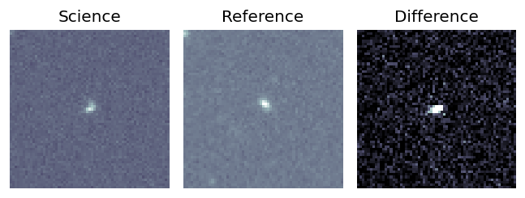
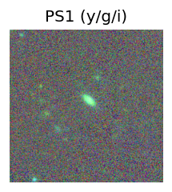
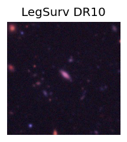
peak abs mag = -21.53 LegacySurvey: 1 sources in 3 arcsec Closest: d = 2.24 arcsec, 335.9 deg (east of north) photoz=0.12 (68% bounds 0.1, 0.13), type=SER peak abs mag = -20.54 (68% bounds -20.1, -20.83) 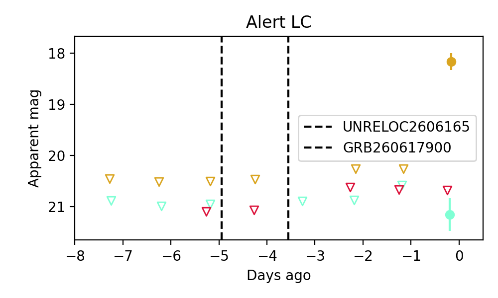
Consistent with synchrotron, g-r>0!
2. ZTF26abdawkt (Afterglow?) [Back to Top] [Share] [Trigger Swift] [Fritz ] [Lasair ]RA, Dec: 249.02543, 18.79781 16h36m6.10s, 18d47m52.12sGalactic (l, b): 36.31143, 38.02725 ext(g-r) = 0.072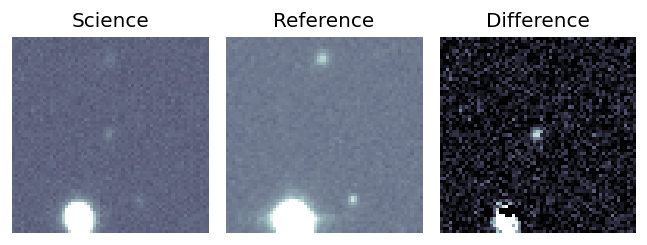
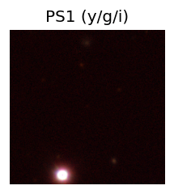
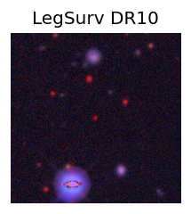
LegacySurvey: 1 sources in 3 arcsec Closest: d = 0.24 arcsec, 115.9 deg (east of north) photoz=0.81 (68% bounds 0.11, 1.6), type=PSF peak abs mag = -23.83 (68% bounds -18.9, -25.65) 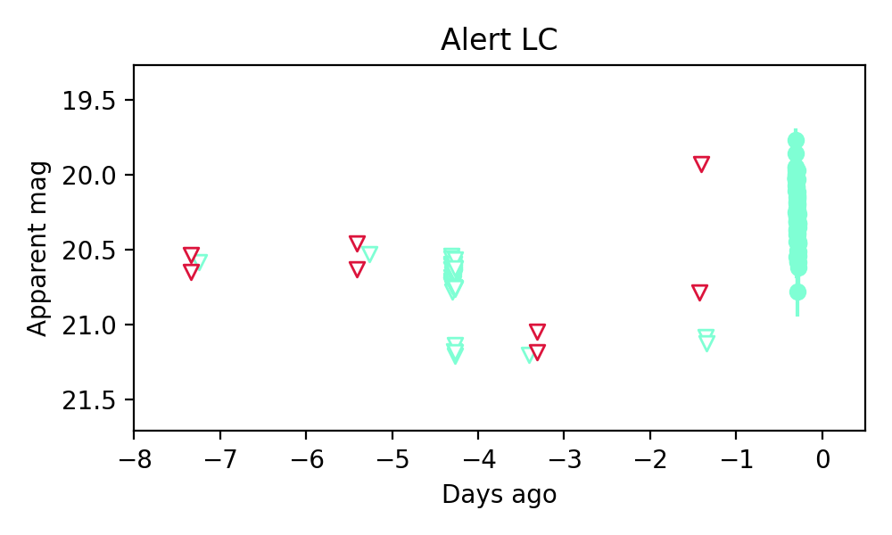
3. ZTF26abdazds (Afterglow?) [Back to Top] [Share] [Trigger Swift] [Fritz ] [Lasair ]RA, Dec: 242.47659, 16.61105 16h 9m54.38s, 16d36m39.78sGalactic (l, b): 30.68222, 43.07118 ext(g-r) = 0.05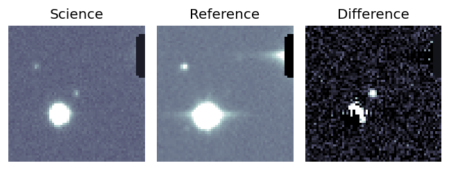
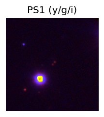
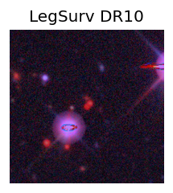
LegacySurvey: 1 sources in 3 arcsec Closest: d = 1.88 arcsec, 312.0 deg (east of north) photoz=0.62 (68% bounds 0.34, 2.0), type=SER peak abs mag = -24.0 (68% bounds -22.48, -27.14) 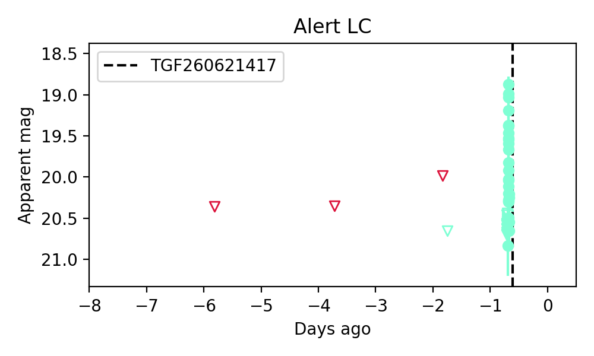
Section 2: Older Sources Observed Last Night (11)
0. ZTF26abbxeya (Afterglow?FBOT?) [Back to Top] [Share] [Trigger Swift] [Fritz ] [Lasair ]RA, Dec: 157.74397, 14.96791 10h30m58.55s, 14d58m4.47sGalactic (l, b): 226.14481, 55.19253 ext(g-r) = 0.047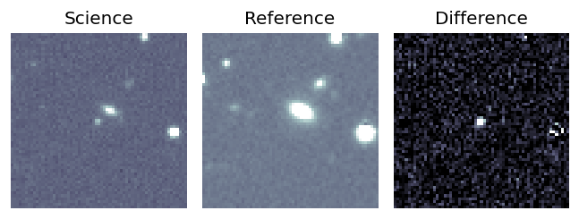
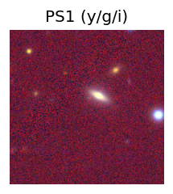
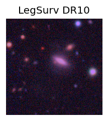
peak abs mag = -19.42 LegacySurvey: 1 sources in 3 arcsec Closest: d = 2.80 arcsec, 344.9 deg (east of north) photoz=0.29 (68% bounds 0.19, 0.44), type=SER peak abs mag = -22.03 (68% bounds -21.06, -23.08) 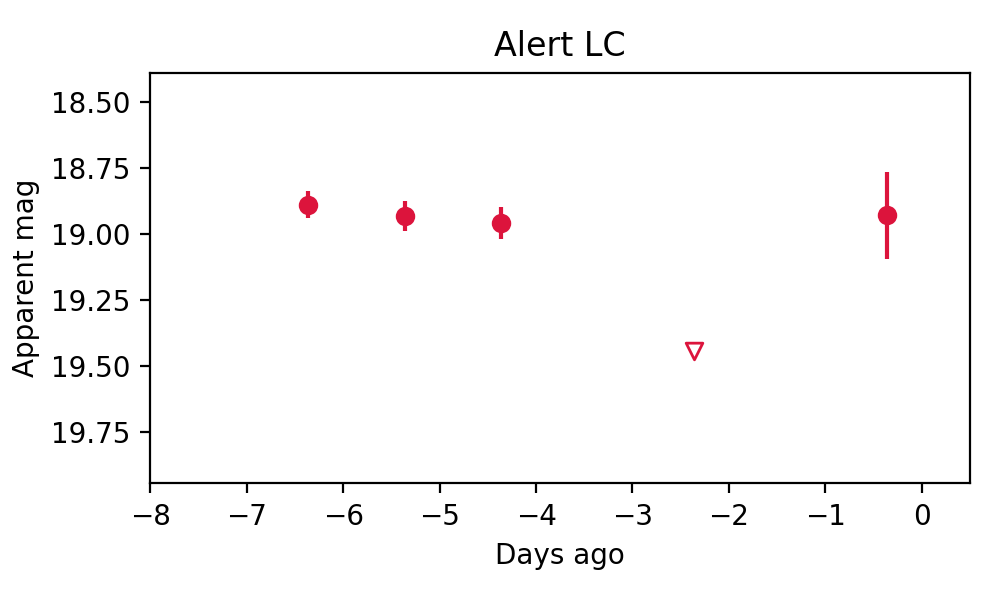
1. ZTF26abcfltk (FBOT?) [Back to Top] [Share] [Trigger Swift] [Fritz ] [Lasair ]RA, Dec: 263.4156, 4.37686 17h33m39.74s, 4d22m36.68sGalactic (l, b): 27.86131, 19.28074 ext(g-r) = 0.198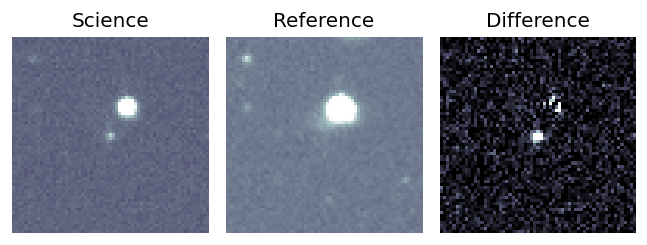
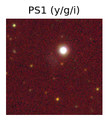
PS1: 1 source in 3 arcsec Closest: d = 4.73 arcsec photoz=0.21+/-0.14 peak abs mag = -23.05 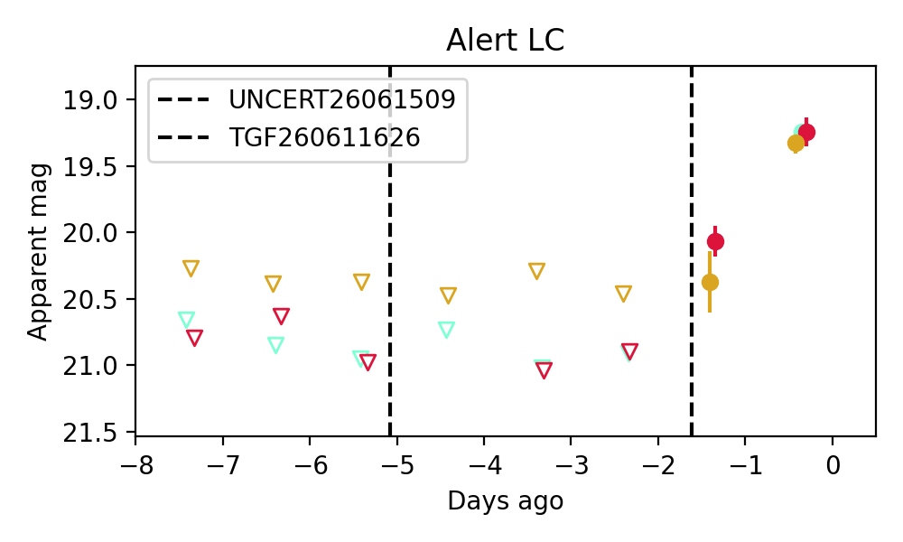
2. ZTF26abcibmm (FBOT?) [Back to Top] [Share] [Trigger Swift] [Fritz ] [Lasair ]RA, Dec: 211.92718, -10.35667 14h 7m42.52s, -10d-21m-24.00sGalactic (l, b): 331.75739, 48.2002 WARNING: 2.41 deg from ecliptic plane ext(g-r) = 0.059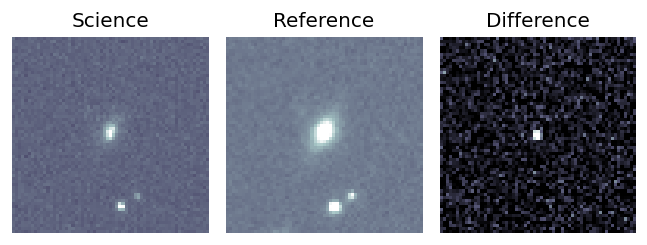
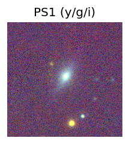
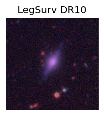
peak abs mag = -19.53 LegacySurvey: 1 sources in 3 arcsec Closest: d = 1.33 arcsec, 343.2 deg (east of north) photoz=0.08 (68% bounds 0.07, 0.1), type=SER peak abs mag = -19.47 (68% bounds -19.22, -19.83) 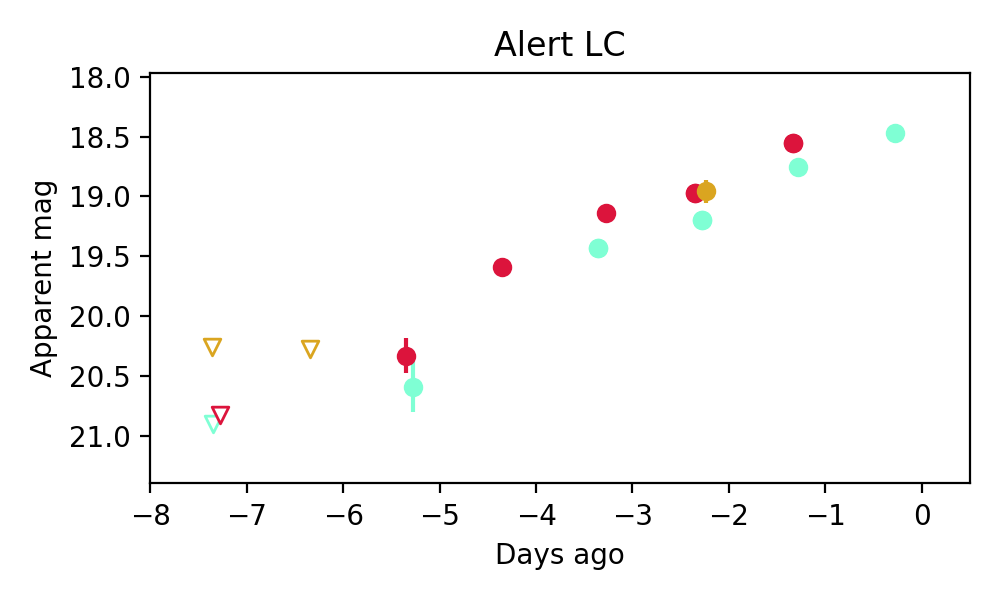
Consistent with synchrotron, g-r>0!
3. ZTF26abckuod (FBOT?) [Back to Top] [Share] [Trigger Swift] [Fritz ] [Lasair ]RA, Dec: 293.54955, 44.90305 19h34m11.89s, 44d54m10.97sGalactic (l, b): 77.60706, 11.82657 ext(g-r) = 0.216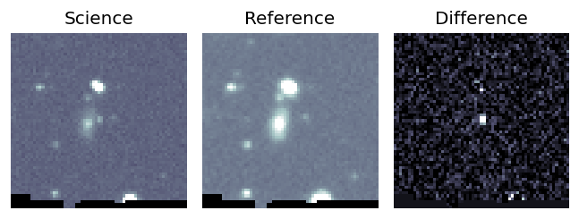
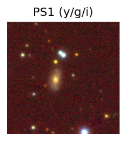
peak abs mag = -19.30 PS1: 1 source in 3 arcsec Closest: d = 4.47 arcsec photoz=0.18+/-0.07 peak abs mag = -21.08 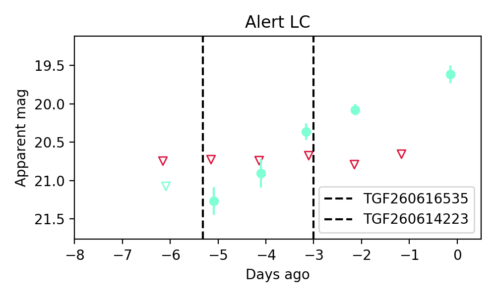
4. ZTF26abcqcat (Afterglow?) [Back to Top] [Share] [Trigger Swift] [Fritz ] [Lasair ]RA, Dec: 234.91827, 10.21716 15h39m40.38s, 10d13m1.77sGalactic (l, b): 18.04033, 46.98562 ext(g-r) = 0.049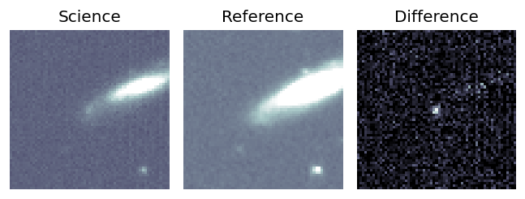
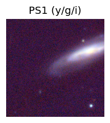
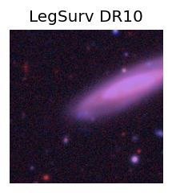
LegacySurvey: 1 sources in 3 arcsec Closest: d = 2.69 arcsec, 186.6 deg (east of north) photoz=0.07 (68% bounds 0.03, 0.14), type=SER peak abs mag = -18.02 (68% bounds -15.92, -19.65) 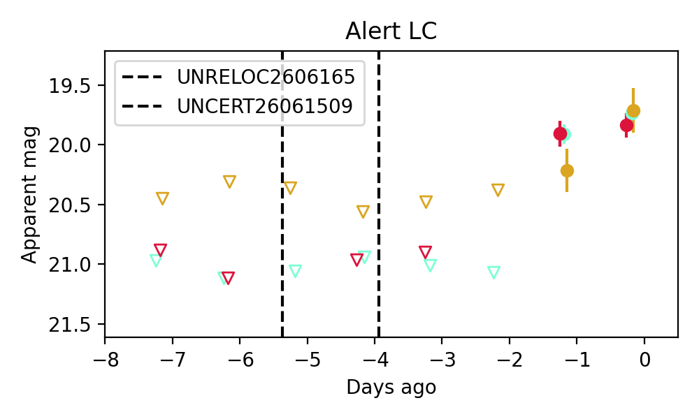
Consistent with synchrotron, g-r>0!
5. ZTF26abcqcwj (Afterglow?FBOT?) [Back to Top] [Share] [Trigger Swift] [Fritz ] [Lasair ]RA, Dec: 231.63876, -13.31782 15h26m33.30s, -13d-19m-4.15sGalactic (l, b): 350.82084, 34.75775 ext(g-r) = 0.172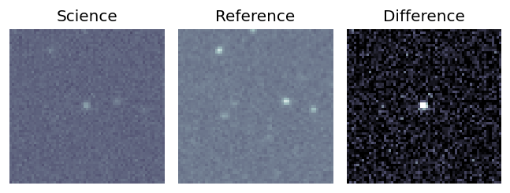
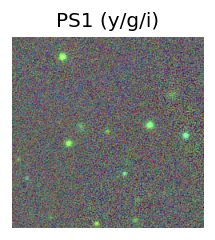
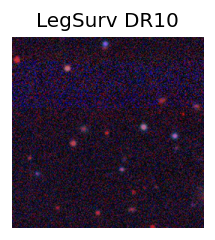
LegacySurvey: 1 sources in 3 arcsec Closest: d = 0.51 arcsec, 130.7 deg (east of north) photoz=0.63 (68% bounds 0.48, 1.68), type=PSF peak abs mag = -23.94 (68% bounds -23.2, -26.54) 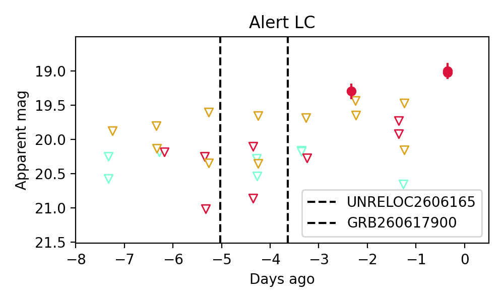
6. ZTF26abcqesk (Afterglow?FBOT?) [Back to Top] [Share] [Trigger Swift] [Fritz ] [Lasair ]RA, Dec: 252.31072, 55.09314 16h49m14.57s, 55d 5m35.30sGalactic (l, b): 83.40401, 39.25719 ext(g-r) = 0.015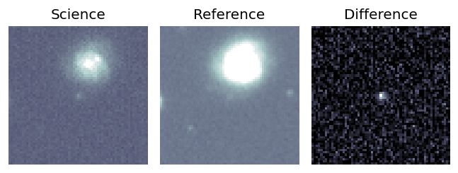
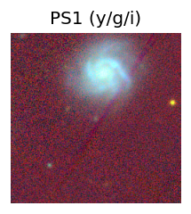
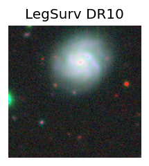
LegacySurvey: 1 sources in 3 arcsec Closest: d = 0.65 arcsec, 170.1 deg (east of north) photoz=0.37 (68% bounds 0.25, 0.54), type=REX peak abs mag = -22.66 (68% bounds -21.64, -23.63) 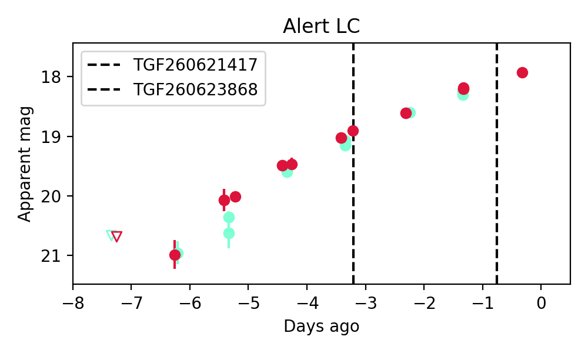
Consistent with synchrotron, g-r>0!
7. ZTF26abcqfnv (FBOT?) [Back to Top] [Share] [Trigger Swift] [Fritz ] [Lasair ]RA, Dec: 217.96869, 25.34149 14h31m52.49s, 25d20m29.35sGalactic (l, b): 34.09167, 67.44376 ext(g-r) = 0.034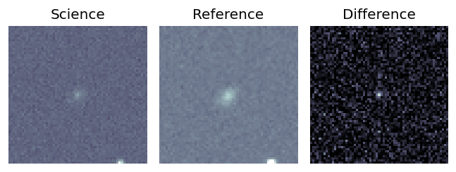
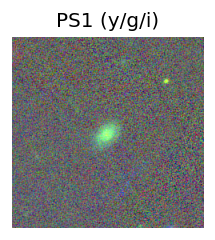
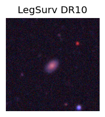
peak abs mag = -20.25 LegacySurvey: 1 sources in 3 arcsec Closest: d = 1.07 arcsec, 155.6 deg (east of north) photoz=0.28 (68% bounds 0.26, 0.32), type=SER peak abs mag = -20.45 (68% bounds -20.26, -20.72) 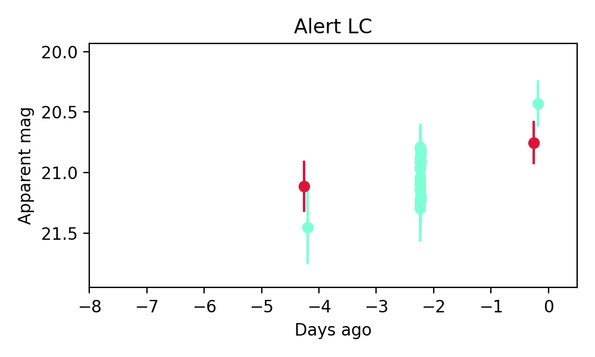
8. ZTF26abcsqoj (Afterglow?) [Back to Top] [Share] [Trigger Swift] [Fritz ] [Lasair ]RA, Dec: 297.83931, 37.11096 19h51m21.43s, 37d 6m39.45sGalactic (l, b): 72.25135, 5.25971 ext(g-r) = 0.447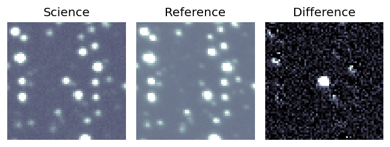
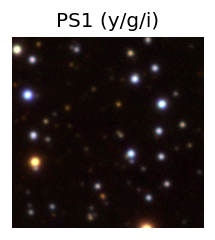
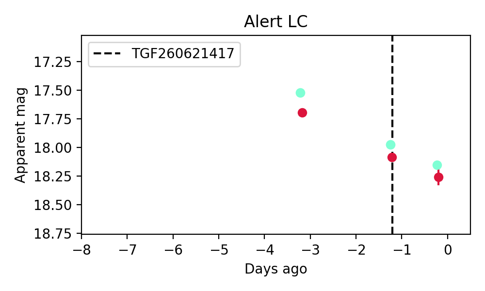
9. ZTF26abdbeqv (FBOT?) [Back to Top] [Share] [Trigger Swift] [Fritz ] [Lasair ]RA, Dec: 281.32661, 49.88352 18h45m18.39s, 49d53m0.66sGalactic (l, b): 79.17755, 21.34898 ext(g-r) = 0.051LegacySurvey: 1 sources in 3 arcsec Closest: d = 0.77 arcsec, 178.7 deg (east of north) photoz=0.71 (68% bounds 0.25, 1.04), type=REX peak abs mag = -22.94 (68% bounds -20.23, -23.96)
10. ZTF26abdbpwk (Afterglow?) [Back to Top] [Share] [Trigger Swift] [Fritz ] [Lasair ]RA, Dec: 271.93314, -6.97709 18h 7m43.95s, -6d-58m-37.53sGalactic (l, b): 21.67971, 6.43384 ext(g-r) = 1.36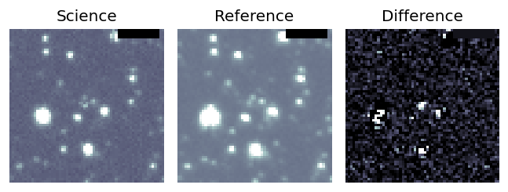
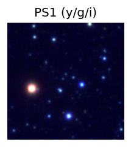
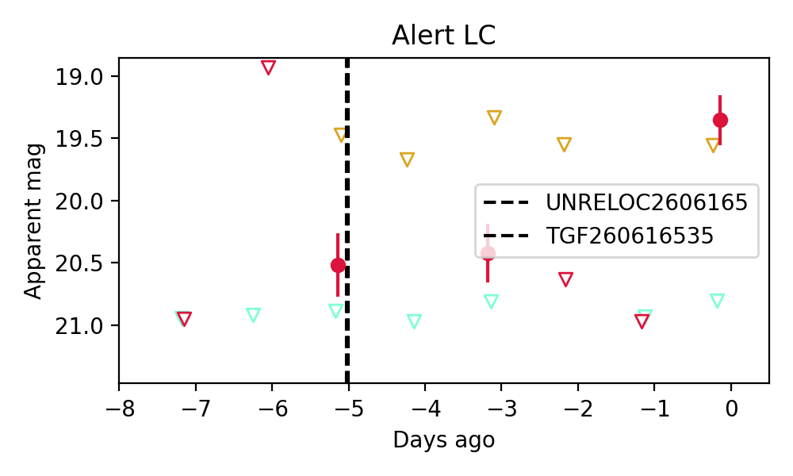